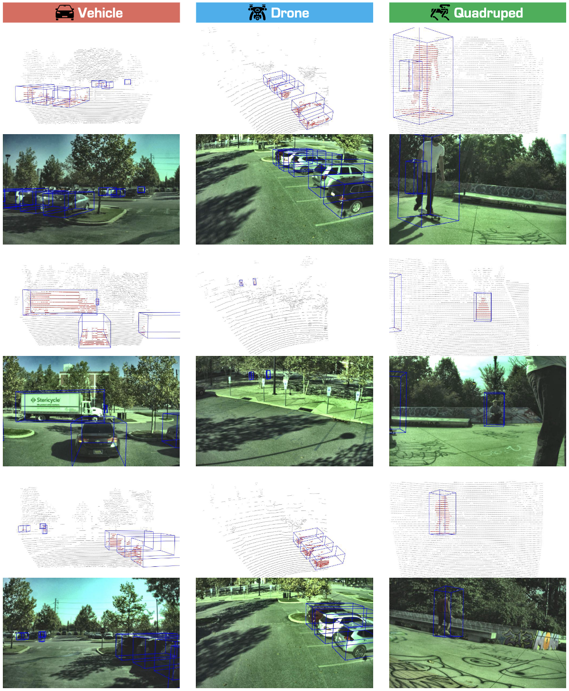
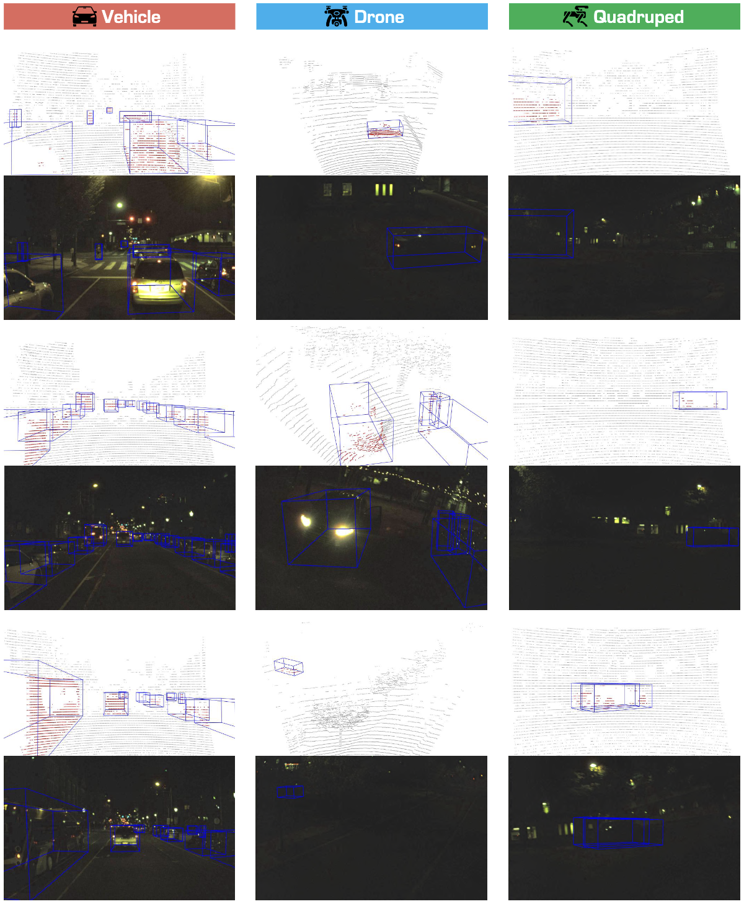

üëã Welcome to Track #5: Cross-Platform 3D Object Detection of the 2025 RoboSense Challenge!

üéØ Objective
As robotics continues to advance, LiDAR-based 3D object detection has become a focal point in both academia and industry. However, most existing datasets and methods target vehicle platforms, overlooking quadrupeds and drones. This challenge, built on our benchmark, aims to:
- Build on three platforms—vehicles, drones, and quadruped robots—to foster innovations in a unified perception framework;
- Bridge geometric and data distribution disparities to achieve rapid model transfer and adaptation across platforms;
- Lower annotation and deployment overhead, supporting collaborative sensing for heterogeneous robot teams in urban, disaster, and indoor scenarios.
üóÇÔ∏è Phases & Requirements
Phase 1: Vehicle → Drone Adaptation
Duration: 15 June 2025 – 15 August 2025
Setup:
- Source platform: Vehicle LiDAR scans with 3D bounding-box annotations
- Target platform: Unlabeled Drone LiDAR scans
Ranking Metric: AP@0.50 (R40) for the Car class evaluated on Drone data
Phase 2: Vehicle → Drone & Quadruped Adaptation
Duration: 15 August 2025 – 15 September 2025
Setup:
- Source platform: Vehicle LiDAR scans with annotations
- Target platforms: Unlabeled Drone and Quadruped LiDAR scans
Ranking Metric: Weighted score combining:
- AP@0.50 (R40) for the Car class
- AP@0.25 (R40) for the Pedestrian class
(Scores computed across both Drone and Quadruped platforms.)
üöó Dataset Examples



üõ†Ô∏è Baseline Model
In this track, we adopt PV-RCNN as the base 3D detector, and leverage ST3D/++ as our baseline adaptation framework. Detailed environment setup and experimental protocols can be found in the Track5 GitHub repository .
Beyond the provided baseline, participants are encouraged to explore alternative strategies to further boost cross-platform performance:
- Treat the cross-platform challenge as a domain adaptation problem by improving pseudo-label quality and fine-tuning on target-platform data.
- Design novel data augmentation techniques to bridge geometric and feature discrepancies across platforms.
- Adopt geometry-agnostic 3D detectors, such as point-based architectures, that are less sensitive to platform-specific point-cloud characteristics.
üìä Baseline Results
Phase 1 Results
| Metric | Car BEV AP0.7@40 | Car 3D AP0.7@40 | Car BEV AP0.5@40 | Car 3D AP0.5@40 |
|---|---|---|---|---|
| PVRCNN-Source | 34.60 | 16.31 | 40.67 | 33.70 |
| PVRCNN-ST3D | 47.81 | 26.03 | 53.40 | 46.64 |
| PVRCNN-ST3D++ | 45.96 | 25.37 | 52.65 | 45.07 |
üîó Resources
We provide the following resources to support the development of models in this track:
| Resource | Link | |
|---|---|---|
| GitHub | https://github.com/robosense2025/track5 | |
| Checkpoint | Huggingface Checkpoint | |
| Dataset | Huggingface Dataset | |
| Submit Server | Codabench |